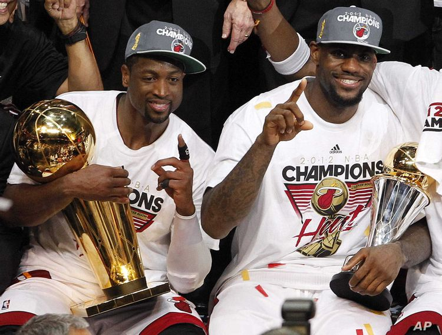

어린 시절(1984-2003)
오하이오 주 애크런에서 태어났다. 제임스의 어머니 글로리아는 16살 때 제임스를 낳았고, 아버지 없이 르브론을 키워야 했기에 르브론은 매우 가난한 유년 시절을 보냈다.
그런 르브론의 딱한 사정을 눈여겨 본 것이 초등학교 친구의 아버지인 프랭크 워커였다.
워커는 글로리아가 생활 기반을 마련하는 동안 르브론을 키워주기로 했다.
르브론은 처음으로 규칙적이고 안정적인 삶을 경험했고, 워커의 다른 자녀와 함께 가정교육을 받게 된다.

르브론이 농구에 엄청난 재능이 있다는 사실을 안 워커는 그를 농구 스쿨에 보내 제대로 농구를 배우게 했고, 르브론은 여기서 시언 코튼, 드류 조이스 3세, 윌리 맥기 등의 친구들과 훗날 고등학교 은사들을 만나게 된다.
고등학교에 진학할 무렵, 르브론은 세인트 빈센트-세인트 메리 고등학교에 입학했다.
애크런에서 농구 잘하는 흑인 학생은 부틀 고등학교에 가는 것이 관례였지만 부틀에서는 함께 농구하던 친구를 거절했고 친구와 계속 농구를 하고 싶었던 르브론은 세인트 빈센트-세인트 메리 입학을 결정한다.
세인트 빈센트-세인트 메리는 농구에서는 완전히 무명인 학교였다.
르브론과 친구들은 빈센트-세인트 메리를 1984년 이후 처음으로 주 챔피언으로 이끄는 것을 시작으로 엄청난 활약을 하며 지역을 들썩이게 만들었다.
점점 몸이 자라던 르브론의 기량은 이미 고등학생을 초월한 수준이었다.
르브론 제임스가 한창 고등학교에서 뛸 시기에 당장 NBA에 가도 주전으로 뛸 수 있다는 평이었고, 실제로 고등학교 때 받을 수 있는 상이란 상을 다 휩쓸었다.
친구와 함께하기 위해 농구 명문을 포기하고 무명 팀에 입학하여 그 팀을 전국 최강으로 만드는 만화 같은 이야기에 언론의 주목도는 엄청났다.
르브론은 고등학생 때부터 어지간한 프로선수들 정도의 관심을 받았다. 르브론을 중계하기 위해 이례적으로 13년 만에 고등학생 농구 시합이 미전역으로 방송될 정도였다.
그리고, 2003년 드래프트 1픽으로 클리블랜드 캐벌리어스에 지명되면서 르브론은 NBA 선수가 되었다.
클리블랜드 1기(2003-2010)
2003/2004 시즌
2003년 드래프트 유망주 중 제임스는 단연 스포트라이트를 독식했다. 클리블랜드는 오랜만에 찾아온 오하이오 주 출생의 프렌차이즈 스타인 제임스를 애지중지 아꼈다. 팀 로스터 구성도 제임스의 입맛에 맞게 구성해주었고, 제임스가 언론에 공격을 받는다 싶으면 아낌없이 실드를 쳐주었다. 또 팀은 르브론 제임스가 프로에 잘 적응하게 하기 위해 03-04시즌 인성을 중시하는 폴 실라스를 감독으로 선임했다. 제임스를 위주로 팀이 돌아가는 것을 탐탁치 않게 여기던 리키 데이비스를 트레이드시키기도 했다. 제임스도 좋은 플레이로 보답했고, 지역봉사를 통해 팬들과 호흡했다. 르브론은 03-04 시즌 20.9득점 5.5리바 5.9어시스트를 기록하면서 신인상을 수상한다. 우승은커녕 플레이오프 진출도 잘 하지 못하던 팀을 이후 일약 우승 후보 팀으로 만들었다. 데뷔 시즌의 성과는 상당해서 직전시즌 17승 65패를 했던 팀이 35승 47패로 많은 승수를 차지하게 되었다.
시즌 성적
79경기 39.6분 20.9득점 5.5리바운드 5.9어시스트 1.6스틸 41.7%야투율
신인왕 수상
2004/2005 시즌
04-05 시즌으로 들어가기 직전 팀에서 중추적 역할을 하던 파워포워드 카를로스 부저의 배신 사건으로 인해서 팀 코어를 한순간에 잃어버리는 사건이 일어난다. 어수선한 상황이었으나 04-05 시즌은 오히려 직전 시즌보다 더 강한팀으로 거듭난다. 르브론의 능력이 작년 시즌에 비해서 일취월장했기 때문이다. 다소 어리숙했던 돌파 마무리 능력이 리그 최정상급으로 발전했고, 정확해진 3점슛, 야투율이 무려 5% 가까이 증가해서 득점력이 크게 올랐다. 만 20세 나이로 역대 최연소 트리플더블 기록하고 최연소 All-nba 세컨팀에 선정되었으며 팀 성적도 42승 40패로 5할 승률을 이끌었다. 만 20세의 선수가 이런 어마어마한 시즌을 보내니 당시의 반응은 굉장히 센세이션했다.
시즌 성적
80경기 42.3분 27.2득점 7.4리바운드 7.2어시스트 2.2스틸 47.2%야투율
2005/2006 시즌
05-06시즌 부터는 리그를 대표하는 선수가 된다. 시즌 중간에는 만 21세 나이로 올스타 MVP를 수상하는데 리그 최연소 기록이다. 팀은 50승 32패로 성적을 대폭 끌어올렸다.
시즌 성적
79경기 42.5분 31.4득점 7.0리바운드 6.6어시스트 1.6스틸 48.0%야투율
2006/2007 시즌
06-07 시즌엔 동부 컨퍼런스 우승을 경험하게 된다. 당시 동부 컨퍼런스의 상대는 이제 내리막길이긴 했지만 막강한 수비력으로 2000년대를 지배하던 디트로이트 피스톤즈였다. 반면에 클리블랜드는 르브론을 제외하고는 어정쩡한 멤버 그 자체였다. 그러나 이 당시 르브론은 경이로운 수준의 활약으로 당대 최강팀의 수비를 완전히 박살내버렸고, 팀을 NBA 파이널로 인도하였다. 이 당시 르브론의 퍼포먼스에 대해 농구 팬들이 외계인에 빗대며 디트로이트 침공이라 표현한다. 엄청난 활약을 하며 파이널로 팀을 인도한 르브론이였지만, 파이널에서 기다리고 있던 상대는 왕조를 이룬 최강의 팀 샌안토니오 스퍼스였다. 스퍼스엔 NBA 역대 최고의 파워포워드 팀 던컨, 슈퍼 식스맨 마누 지노빌리, 탑클래스 PG 토니 파커 이른바 빅3가 기다리고 있었고 시리즈 내내 클리블랜드는 완벽하게 패하고 말았다. 클리블랜드가 믿을 수 있는 건 르브론 밖에 없었지만 그 당시만 해도 돌파 외에는 별다른 공격 수단이 없었던 르브론은 샌안토니오의 수비에 막히자 별다른 수도 써보지 못했다. 결국 이 파이널은 역사상 가장 일방적으로 끝난 시리즈가 되었으며, 클리블랜드도 르브론도 아무것도 해보지 못하고 0:4로 박살이 나버렸다.
시즌 성적
78경기 40.9분 27.3득점 6.7리바운드 6.0어시스트 1.6스틸 47.6%야투율
2007/2008 시즌
전체적인 팀의 상황이 그리 좋지 못했다. 이 당시 레이커스가 트레이드 데드라인에 파우 가솔을 희대의 트레이드로 데려왔다. 이에 자극을 받은 다른 강팀들이 전력 보강을 위해 노력했다. 이에 클리블랜드도 트레이드를 통해 벤 월라스, 월리 저비악, 딜론테 웨스트 등을 받아왔지만 실제로는 큰 도움은 주지 못했다. 르브론은 이 멤버들로 플레이오프 2라운드에서 보스턴을 7차전까지 끌고 갔지만, 결국 보스턴을 넘지는 못했다. 정규시즌에는 득점력이 한층 상승하여 득점왕을 차지하였다.
시즌 성적
75경기 40.4분 30.0득점 7.9리바운드 7.2어시스트 1.8스틸 48.4%야투율
정규시즌 득점왕 수상
2008/2009 시즌
클리블랜드는 모 윌리엄스를 받아와 전력을 강화했다. 르브론 제임스을 골자로 하여 롤플레이어들이 갖추어지면서 정규시즌에서 클리블랜드는 강력한 모습을 보였다. 전년도 45승을 거뒀던 팀이 무려 21승을 더 보태며 66승 16패로 창단 최초 정규시즌 전체 1위라는 최고의 성적을 냈다. 르브론 역시 최고의 성적으로 정규 시즌 MVP를 차지했다. 하지만 문제는 플레이오프였다. 클리블랜드는 1,2라운드에서 디트로이트 피스톤즈, 애틀란타 호크스를 연달아 스윕하면서 침없는 기세를 보여줬다. 그리고 2라운드에서 보스턴을 떨어뜨리고 컨퍼런스 파이널에 올라온 복병 올랜도 매직을 상대로 경기를 치루게됐다. 초월적인 활약을 하는 드와이트 하워드를 상대로 르브론은 WS/48 0.399, PER 37.4 라는 경이적인 활약을 하며 맞섰다. 그러나 올랜도의 3점슛이 미친듯이 터지면서 경기를 잡을 수가 없었다. 또한 정규시즌 르브론을 잘 도왔던 롤플레이어들은 슈퍼스타의 오버롤 싸움이 되는 플레이오프에서는 제대로 된 조력자 역할을 하지 못했다. 결국 르브론의 필사적인 활약에도 불구하고 클리블랜드는 패배하고 말았다. 이때 컨퍼런스 파이널을 넘었다면 코비 브라이언트의 로스앤젤레스 레이커스와 파이널에서 격돌하는 상황이었다. 08-09 플레이오프 직전부터 이 두 사람의 파이널 맞대결 성사여부가 최대 관심사였는데, 결국 리그 최고의 스타들끼리의 격돌이 아쉽게 무산되었다. 08-09시즌의 르브론 제임스는 31.67의 PER을 기록했는데 이는 당시를 기준으로 단일시즌 PER순위에서 4위, 12년이 지난 현재를 기준으로도 역대 5위에 해당하는 시즌이다. 그야말로 전설급 활약을 펼쳤다는 것을 의미한다.
시즌 성적
81경기 37.7분 28.4득점 7.6리바운드 7.2어시스트 1.7스틸 48.9%야투율
정규시즌 MVP 수상
2009/2010 시즌
전성기가 지났지만 여전히 영향력을 발휘하는 샤킬 오닐을 데려오고, 트레이드 데드라인을 맞추어서 앤트완 재미슨까지 트레이드를 통해 영입하는 등 우승을 위해 사활을 걸었다. 하지만 2라운드에서 보스턴 셀틱스에게 2년전과는 달리 너무 무기력하게 탈락하고 말았다. 다만 정규시즌에서는 여전한 활약으로 작년에 이어 정규시즌 MVP를 받아 2연패한다.
시즌 성적
76경기 39.0분 29.7득점 7.3리바운드 8.6어시스트 1.6스틸 50.3%야투율
정규시즌 MVP 수상
디시전 쇼와 이적
우승에 실패함에 따라 시즌 후에 FA신분이 되는 르브론 제임스의 거취가 최고의 화두로 떠올랐다. 이런 분위기를 즐겼는지 그는 생방송으로 자신의 거취를 발표하는 The Desicion 이라는 쇼를 한다고 발표했다. 시즌이 끝난 직후 사람들은 르브론이 최대의 빅마켓인 뉴욕이나 빅마켓이자 조던의 후계자가 될 수 있는 시카고로 갈 거라는 것이 지배적이었다. 자신은 120%에 가까운 성적을 냈지만 우승을 못한 클리블랜드의 상황에 더해져 많은 팀들이 샐러리 캡을 비워놓고 기다리고 있었기 때문이다. 허나 디시전쇼를 한다는 발표 이후에는 생방송으로 이적을 발표해서 팬들을 저버리진 않겠지라는 생각으로 대부분이 클리블랜드 잔류를 예상하였다. 그런데 막상 생방송에서 자신의 재능을 사우스 비치로 가져간다는 말과 함께 마이애미 히트행을 발표한다. 결국 배신을 당한 캐벌리어스 팬들은 르브론과 관련된 상품을 버리고, 찢고, 불태웠으며 마이애미를 제외한 미국의 모든 주 역시 르브론을 비난하기 시작했다. 선수가 이적을 발표할 때는 조용히 이적 소식이 언론을 통해 알려지고 그 이후에 기자회견을 하는게 정석이다. 심지어 르브론에게 클리블랜드는 단순히 소속팀이 아닌 어린 시절부터 인연이 깊은 고향이기도 하다. 르브론의 생방송 이적발표가 의도는 알 수 없지만 팬들에게는 기만하는 행위로 여겨졌고, 아직까지도 르브론의 흑역사 중의 하나로 남아있다.
마이애미 히트(2010-2014)
2010/2011 시즌
리그 최강의 빅 3 르브론 제임스, 드웨인 웨이드, 크리스 보쉬가 뭉쳤다. 리그의 엘리트 빅맨, 리그 최고의 슈팅 가드, 그리고 리그 최고의 선수 이 셋이 뭉쳤으니 우승은 당연할 것이라고 당시 대부분의 사람들은 이렇게 전망했다. 허나, 슈퍼스타 셋이 뭉친다고 해도 롤이 겹치면 생각보다 시너지는 안날 수가 있고, 무엇보다 세 선수의 스타일은 조화되기 어려운 편이었다. 결국 시즌 초의 이 우려는 현실이 되었다. 빅3는 생각만큼 시너지를 발휘하지 못했고, 야심차게 영입한 벤치멤버들은 기대에 미치지 못했다. 이를 빅3의 개인기로 억지스럽게 메꾸려다보니 강팀에게는 맥을 추지 못했고, 이 과정에서 서로의 역할에 대한 불만들이 터져나오면서 내외적으로 분위기도 좋지 않았다. 성적이 안 좋다보니 온갖 내분설, 갈등설도 터져 나왔다. 그러나 어느정도 시즌이 중반에 접어들 무렵부터 마이애미는 승수를 쌓기 시작했다. 사실 이 무렵에도 팀의 부분보다는 빅3의 재능으로 커버하는 형국이었지만, 워낙 대단한 선수들이 뭉친 탓에 그것만으로도 강력했다. 마이애미는 정규시즌을 58승 24패로 마쳐 동부 컨퍼런스 2위로 플레이오프에 안착했다. 이 시즌의 르브론은 3연속 정규시즌 MVP를 노렸고, 그에 걸맞는 활약을 했지만 빅3가 뭉친 슈퍼팀에 대한 반감과 3연속 MVP에 대한 반감으로 인해 수상하지 못했다. 문제는 플레이오프였다. 강력한 동료들을 옆에 거느린 르브론은 필라델피아 세븐티식서스를 물리쳤고, 무엇보다 그동안 자신을 번번이 가로막던 보스턴 셀틱스를 무너뜨리는데 성공했다. 마침내 생애 2번째로 파이널에 진출했고, 상대는 덕 노비츠키가 버티는 댈러스 매버릭스였다. 대부분의 사람들은 빅3가 버티는 마이애미 히트의 우세를 점쳤다. 하지만 이 시리즈에서 르브론은 육체적, 정신적으로 완전히 무너진 멘붕 상태로 엄청난 부진 끝에 최악의 경기력을 보였다. 심지어는 승부처에서 소극적인 모습을보여 현지 히트팬들에게 거센 질타를 받았고, 새가슴 논란에 불을 지폈다. 거기다 독감에 걸린 노비츠키를 웨이드와 함께 조롱하는 모습이 카메라에 잡혀 언론과 팬의 집중포화를 맞게되었다. 그리고 홈에서 6차전, 이 경기에서도 르브론은 팀의 패배를 막지 못하고 댈러스에게 우승을 내주고만다. 경기는 6차전까지 갔지만 4, 5, 6차전을 내리 내주면서 완전히 무너진 시리즈였기에 그 충격은 더욱 컸다. 이때 르브론의 활약은 바로 전 시즌에 백투백 MVP를 차지한 선수라고 믿기 힘들 정도로 처참했다. 시리즈 평균 17.8점 7.2리바운드 6.8어시스트에 그치며 득점리더였던 드웨인 웨이드(26.8점)는 물론 2위인 크리스 보쉬(18.5점)에게도 득점순위가 밀렸다. 더 중요한 것은 저 마저도 승부처가 아닌 순간에 쌓은 점수이고 중요한 순간마다 완전히 사라져버렸기 때문에 실제 임팩트는 더욱 없었다는 점이다. 그리고, 그 여파는 경기 후에도 이어지게 된다. 시리즈 패배 직후 인터뷰에서 르브론은 자신을 비난하는 안티팬들에게 "너희들이 비난하건 말건 나는 잘먹고 잘살테니, 너희들은 real world로 돌아가라" 라는 발언을 하여 큰 논란이 되었다. 그래서 르브론의 이 발언이 있던 직후 팬과 안티 팬을 가리지 않고 당연히 르브론을 더욱 비난하고 조롱했다. 언론이건 팬들이건 르브론을 조롱하기 바빴으며, 패배자인 르브론은 변명할 수 있는 처지도 되지 못했다. 르브론에게는 팬들도 감싸주지 못하는 명실상부한 최악의 해였다.
시즌 성적
79경기 38.8분 26.7득점 7.5리바운드 7.0어시스트 1.6스틸 51.0%야투율
2011/2012 시즌

작년 파이널 패배에 대한 온갖 비난과 조롱 끝에 르브론과 마이애미 히트는 새 시즌을 시작했다. 르브론으로서도 마이애미로서도 물러날 수 없었던 시즌이었기에 마이애미 히트의 사장 팻 라일리는 빅3를 구축한 대신 얇아진 롤 플레이어의 보강에도 힘을 쏟았다. 지난 시즌의 서로 공격하려고 안달이 난 상황에서 르브론을 중심으로 팀이 확실하게 재편되었다. 엄청난 득점력을 가지고 있었던 크리스 보쉬는 철저하게 자신을 희생해서 3옵션이 되었다. 히트의 터줏대감이지만 2010년을 기준으로 기량 하락이 시작된 드웨인 웨이드는 르브론이 팀의 중심이라고 인정하였다. 여기에 한시즌을 거치면서 팀의 조직력도 크게 향상되어 수비력에서 많은 발전이 있었고, 마이애미는 이전 시즌보다 더 강력한 팀이 되어 플레이오프에 진출했다. 그리고 르브론의 진정한 전성기 시절이 시작 된것도 한 몫했다. 정규 시즌 르브론은 여전히 강력한 모습으로 정규 시즌 MVP를 1개 더 추가하였다. 플레이오프에 진출한 마이애미는 르브론의 활약을 앞세워 뉴욕 닉스를 간단하게 격파했고, 이어 인디애나 페이서스와 격돌하였다. 양팀의 전력차가 꽤 나기에 시리즈는 마이애미가 승리했지만 크리스 보쉬가 부상당하는 변수가 발생한다. 마이애미의 전술에서 보쉬의 중요성은 대단한데, 무엇보다 보쉬가 빠지면 당시 마이애미는 빅맨이 너무나 부족한 상황이었다. 문제는 다음 상대가 노련한 관록의 팀인 보스턴 셀틱스 였고 보스턴에는 한층 성장한 라존 론도가 있었다. 론도는 본래 다른 장점에 비해 슛이 안좋기로 유명한 선수였지만 이 시리즈에서 슛이 대폭발하며 히트를 거침없이 무너뜨렸다. 보스턴은 보쉬가 빠진 히트의 연약한 골밑을 집요하게 공격했고, 마이애미는 큰 위기에 봉착했다. 반면 마이애미에서는 웨이드가 최악의 난조에 빠지면서 빅3가 무색한 상황이 되었고, 르브론은 공격과 수비에서 혼자 해결해야 되는 최악의 상황에 빠졌다. 어찌어찌 시리즈를 끌고 갔지만 제대로 상대가 될리 만무했고, 결국 마이애미는 5차전까지 내주며 2승 3패로 단 한번만 패배하면 시즌이 종료되는 최악의 상황에 직면했다. 빅3 결성 첫번째 시즌에도 패배하여 엄청난 조롱을 받았지만, 이 경우에는 슈퍼스타들이 처음 뭉쳐 호흡이 맞지 않았다는 변명거리가 있었다. 하지만 이제는 두번째 시즌이었고, 두번 도전해서도 실패한다면 이후 날아온 비난들은 상상할 수 없었다. 르브론으로서는 선수 커리어가 완전히 망가지기 직전으로 몰리고 있었다. 바로 작년까지만 해도 경기 내외적인 부분에서 실망스러운 모습을 보여줬던 제임스였지지만 이날 르브론은 무서울 정도의 집중력을 보이면서 처음부터 맹공을 퍼부어 보스턴을 격침시키는데 성공했다. 이후 7차전에서는 부상으로 파이널에서나 복귀가 가능할것 같던 보쉬가 복귀하여 팀을 도왔다. 르브론 역시 강력한 모습을 보이며 보스턴을 물리치는데 성공했다. 파이널의 상대는 그해 득점왕 케빈 듀란트와 제임스 하든, 러셀 웨스트브룩 삼총사가 있는 오클라호마였다. 르브론은 이 시리즈에서 맹활약하며 5차전에서 자신의 첫 우승을 일궈냈다. 경기 내내 맹활약을 펼치면서 시리즈 평균 28.6점 10.2리바운드 7.4어시스트로 시즌 MVP에 이어 파이널 MVP까지 수상하는 영광을 누렸다. 이후 르브론은 2012 런던 올림픽에서 드림팀의 일원으로 참가했다. 르브론은 여기서도 맹활약을 벌여 파우 가솔이 버티는 스페인을 물리치고 미국에 금메달을 선사했다. 올림픽에서의 금메달까지 수상하게 되면서 르브론은 1992년 마이클 조던 이후 20년만에 단일년도에 NBA 우승, 정규시즌 MVP, 파이널 MVP, 올림픽 금메달을 수상한 두 번째 선수가 되었다. 이렇게 르브론의 2012시즌은 화려하게 마무리 되었다.
시즌 성적
62경기 37.5분 27.1득점 7.9리바운드 6.2어시스트 1.9스틸 53.1%야투율
NBA 파이널 우승, 파이널 MVP, 정규시즌 MVP 수상
2012/2013 시즌
르브론의 최전성기 시즌이다. 이 시즌 르브론은 그야말로 리그의 지배자였다. 마이애미는 시즌을 시작하기에 앞서 레이 앨런과 라샤드 루이스을 영입하며 전력을 더욱 강화했다. 그러나 이 선수들은 나이 탓에 수비에서 문제가 있는 편이라 시즌 초반의 마이애미는 대량 실점을 연거푸 하며 경기를 어렵게 풀어나가는 경우가 많았다. 또한 웨이드는 전체적으로는 준수했지만 기복이 더욱 심해졌다. 이런 상황에서 르브론은 꾸준한 경기력을 보였으나 카멜로 앤써니가 맹활약을 하고 케빈 듀란트가 한층 발전된 모습을 보이면서 MVP 3순위까지 밀려나기도 했다. 그러나 카멜로 앤써니는 특유의 기복으로 시즌 초반의 활약을 다 말아먹었고, 반면에 듀란트는 여전히 강력했으나 후반기가 되자 조금 폼이 떨어졌다. 그런데 이 무렵, 마이애미는 크리스 앤더슨을 영입했고 이는 계속 뛰어줄 수 있는 선수가 부족한 마이애미의 약점을 완벽하게 메워주며 팀은 27연승을 내달렸다. 이 기간동안 르브론도 어마어마한 활약을 보였는데, 2월에는 야투율이 무려 64%를 넘겼을 정도였다. 게다가 오클라호마와의 경기에서 듀란트를 상대로 우위에 있는 모습을 보이며 MVP 경쟁에서 1순위로 뛰어오르는고, 아예 수상을 당연시하게 되는 분위기로 만들어버렸다. 르브론의 기량이 더욱 발전한 것도 한 몫했다. 이때가 바로 르브론의 커리어 하이시즌이였으니 말이다. 만장일치 MVP 수상 이야기가 많이 나돌았다. 하지만 거의 모든 기자가 르브론에게 표를 행사한 것과 달리 단 한명의 기자가 듀란트도 아닌 카멜로 앤써니에게 표를 주며 물건너가게 되었다. 르브론은 이 시즌 수비왕을 노릴 정도로 수비에서도 완벽한 모습을 모이는 공수 최고의 리그의 지배자가 되었다. 이제 모든 사람들의 관심은 르브론이 마이애미의 백투백 우승을 이끌어 낼 수 있을까였다. 르브론은 밀워키 벅스를 상대로 간단하게 승리를 거두었고, 데릭 로즈가 빠진 시카고 불스도 어렵지 않게 물리쳤다. 그런데 문제는 인디애나 페이서스와의 시리즈였다. 지난 시즌에 보쉬도 없이 이겨버렸던 인디애나 였지만, 활활 타오르던 폴 조지가 있는 인디애나는 작년과 전혀 다른 팀이었다. 결국 양 팀은 7차전에 가서야 승부가 갈렸고, 마이애미가 파이널에 진출했다. 2013년 NBA 파이널의 상대는 2007년에 자신을 무참하게 짓눌렀던 샌안토니오 스퍼스였다. 이 시즌에도 샌안토니오는 엄청난 활약을 하며 히트를 침몰 직전까지 몰아버렸다. 이에 비해 르브론은 체력이 바닥났는지 상당히 심각한 기복과 야투율 저하를 보이며 부진했다. 좋지 못한 상황끝에 2승 3패로 간신히 6차전까지 끌고 왔으나, 이날 경기에서 르브론은 3쿼터까지 전혀 힘을 쓰지 못했고, 완벽하게 흐름을 내준채 끌려가고 있었다. 그런데 4쿼터 9분쯤 덩크와 동시에 항상 차던 헤어밴드가 벗겨졌는데, 그 바로 다음 플레이에 클러치 블록슛을 성공하더니 미칠듯한 플레이로 3쿼터에 10점차까지 지던 경기를 따라잡았다. 이렇게 간신히 경기의 흐름을 맞췄지만, 르브론은 경기 40초를 남기고 치명적인 턴오버를 저질렀고, 이 시점에서 지구상의 거의 모든 사람들은 샌안토니오의 우승을 점쳤다. 그러나 마지막 포제션에서 종료 11초 남기고 던진 3점 슛이 실패한걸 보쉬가 리바운드해 다시 던진 레이 앨런의 3점으로 극적인 동점을 만들고 연장에서 승리, 결국 시리즈를 7차전까지 끌고 갔다. 7차전 샌안토니오의 포포비치 감독은 르브론의 야투감이 그동안 좋지 못한것을 이용해서 일부러 르브론을 비워두는 새깅 디펜스를 시전했다. 하지만 르브론은 마침내 이날 야투감을 되찾았다. 그야말로 슛하는 족족 꽂아버리며 이날 37득점 12리바운드 3점슛 5개를 성공하는 기록을 세우며 막판에는 점수차를 4점으로 벌리는 빅샷까지 적중시켰다. 그리고 감격의 우승 끝에 다시 한번 우승과 파이널 MVP 등극에 성공했다. 말이 필요없는 압도적인 시즌이였다. 약점으로 꼽혔던 미들레인지 슛과 3점까지 던지는 족족 들어갔다. 게다가 파이널 마지막 경기인 7차전에서의 맹활약으로 새가슴 이미지도 어느정도 떨쳐버리는 데 성공했다.
시즌 성적
76경기 37.9분 26.8득점 8.0리바운드 7.3어시스트 1.7스틸 56.5%야투율
NBA 파이널 우승, 파이널 MVP, 정규시즌 MVP 수상
2013/2014 시즌
3연속 우승 쓰리핏에 도전하는 해였다. 정규 시즌은 한경기 61득점을 올리는 등 여전히 위력적인 모습을 보여주었다. 하지만 그 경기 이후 조금씩 부진하면서 케빈 듀란트에게 MVP를 내주게 된다. 후반에는 웨이드의 잦은 결장과 벤치멤버들의 노화, 그리고 르브론이 역대급이었던 작년보다는 못한 모습을 보여주면서 인디애나보다 2승 적은 동부 2위로 정규 시즌을 끝마쳤다. 하지만 플레이오프에서는 여전히 위력적인 모습을 보였다. 샬럿, 브루클린, 인디애나를 순서대로 짓밟으며 4번 연속 파이널 진출에 성공했다. 상대는 작년에 만났던 샌안토니오 스퍼스였다. 작년에 아쉽게 우승을 놓쳤던 샌안토니오는 절치부심하고 나왔고, 그에 맞는 엄청난 경기력을 보여주었다. 마이애미는 이렇다할 저항을 하지 못하고 1승 4패로 3연패의 꿈을 이루지 못하게 된다. 르브론은 파이널까지 계속된 맹활약을 펼치며 팀을 파이널까지 인도했으나, 막상 파이널에서는 기대에 못 미치는 퍼포먼스를 보였다. 팀원들은 지난 몇년간 달려온 후유증인지 부상과 기량 저하로 인한 부진에 빠지면서 결과적으로 3연패의 대업에 실패하게 되었다. 이 때문에 조던과 같은 압도적 지배자 이미지에서 많이 멀어지게 되었다.
시즌 성적
77경기 37.7분 27.1득점 6.9리바운드 6.3어시스트 1.6스틸 56.7%야투율
클래블랜드 2기(2014-2018)
2014/2015 시즌
2014년 7월 12일 친정팀으로 복귀한다는 뜻이 담긴 편지를 올리며 고향팀으로 복귀했다. 르브론의 복귀에 따라 클리블랜드는 케빈 러브를 영입하려고 다각적으로 시도하고 있고, 르브론도 러브의 영입을 원했다. 그리고 케빈 러브르를 영입하며, 마침내 르브론 제임스, 케빈 러브, 카이리 어빙의 클리블랜드 빅3가 탄생했다. 그러나 시너지 효과가 아니라 서로의 역할만 침범하는 플레이가 자주 보이고 있어서 볼 소유 시간 재배분이 되지 않는다면 좋지 않은 결과가 나올 가능성이 높았다. 르브론도 허리부상 여파로 인해 코트에 뒹구는 모습을 많이 보였다. 시즌 초반에는 어빙과 르브론이 코트 리딩을 주도권을 다투는 모습을 보여주었다. 시즌 시작후 1달 정도 지난 뒤에는 어떻게 교통 정리가 되었는지 게임 운영은 르브론이 전담하고 어빙은 돌파 및 외곽슛에 의한 득점과 세컨 리딩에 치중하였다. 다만 러브가 더블-더블 게임을 밥먹듯 했던 미네소타 시절과 달리 부진하였다. 바레장의 시즌 아웃과 르브론의 결장으로 한때 4위 바깥으로 나가기까지 했었다. 하지만 르브론 복귀 및 JR 스미스, 티모페이 모즈고프의 합류로 다시 상승세를 탔다. 트레이드 이후 좋은 기세로 시즌을 진행해 53승 29패로 시즌을 마쳤다. 플레이오프에서는 보스턴 셀틱스를 스윕했으나 러브가 상대의 거친 파울로 인해 어깨 탈골을 당하며 출장을 장담할 수 없는 상태가 되었다. 이에 스미스와 퍼킨스가 보복성 하드 파울을 저질러서 마냥 웃을수는 없게 되며 시리즈를 마쳤다. 결국 J.R. 스미스가 2경기 출장정지, 케빈 러브는 수술로 인해 시즌 아웃이 되며 컨퍼런스 세미파이널에 돌입한다. 데이비드 블랫 감독의 용병술과 르브론 제임스의 리딩에 힘입어 시리즈를 4승 2패로 마무리한다. 최종전까지 가지 않으며 일정상 이득을 보지만 세미 파이널 내내 부상으로 신음하던 카이리 어빙이 6차전에서 결국 발목 부상으로 실려나가고 만다. 컨퍼런스 파이널에선 어빙의 부상 등 악재 때문에 애틀란타 호크스의 우세를 예상하는 의견도 많았으나 예상을 뒤엎고 스윕한다. 구단 역사상 두 번째로 동부 컨퍼런스 챔피언을 차지하며 파이널에 진출했다. 그렇게 파이널에 진출했으나 어빙이 부상으로 못 나오게 되고, 러브는 완전히 시즌 아웃된 상황이었다. 힘든 상황에서 극강의 골든 스테이트를 상대로 무려 2승까지 따게 된다. 르브론은 파이널에서 역대급 퍼포먼스를 보여주면서 분전하였으나 시간이 갈수록 주전 라인업이 지치면서 바닥을 드러냈다. 르브론 제임스 혼자 고군분투 할 수밖에 없었던 클리블랜드는 결국 패배했다. 우승팀의 에이스이자 MVP인 스테판 커리가 파이널 MVP 표를 단 한표도 받지 못했고 르브론 본인은 4표를 받았다. 르브론을 잘 막은 안드레 이궈달라가 파이널 MVP를 차지했을 정도로 르브론의 활약은 나쁘지 않았지만 결과적으로 준우승에 머무르게된다.
시즌 성적
69경기 36.1분 25.3득점 6.0리바운드 7.4어시스트 1.6스틸 48.8%야투율
2015/2016 시즌
프리시즌부터 허리가 좋지 않은 모습을 보여줬고 실제 경기중 휴식을 취할 때 허리에 수건을 깔고 누워있는 모습이 자주 나온다. 그 때문에 야투율이 급감했다. 특히 3점슛은 데뷔 시즌을 제외하면 최악의 야투율을 기록하였다. 시즌 중반에 파이널에서 맞붙을 것으로 예측되는 골든스테이트와의 2연전에서 무기력하게 2연패를 하며 감독이 교체되었다. 어수선한 팀 분위기 속에서도 57승 25패 동부 1위를 사수하였다. 그러나 서부에 73승으로 시즌 최다 승리의 대기록을 쓴 골든스테이트와 조용히 최고의 시즌을 보내고 있는 샌안토니오가 있어 우승은 쉽지 않을 듯해 보였다. 플레이오프에서 디트로이트, 애틀란타를 스윕하여 순조롭게 동부 컨퍼런스 파이널로 진출했다. 동부 컨퍼런스 파이널에서 토론토 랩터스를 만나 6차전 끝에 승리하여 파이널로 진출한다. 파이널에서 결국 2년 연속으로 골든스테이트 워리어스를 다시 만나게 되었다. 골든스테이트 워리어스는 작년도 대단했지만 올해는 한층 더 괴물이 되어 시카고 불스의 정규 시즌 최다승 기록을 깼고, 노련미까지 더해졌다. 클리블랜드에게 위안이 있다면 작년에 부상으로 없던 케빈 러브와 카이리 어빙이 정상적으로 파이널에 출전이 가능하고, 쏠쏠한 활약을 보여주고 있는 벤치 자원이 더 많아졌다는 점, 그리고 체력관리가 잘되었다는 점이었다. 4차전까지 예상대로 골든스테이트의 압도적 우위로 1승 3패로 패배하는 듯했다. 르브론 또한 활약하지 못하여 많은 비판을 받고 있었다. 다만 한 가지 변수가 생겼는데 드레이먼드 그린과의 신경전 과정을 리뷰한 결과 그린에게 플래그런트 1 파울이 주어졌으며, 상대의 스몰라인업의 중추 그린의 1경기 출장정지 징계가 확정되었다. 엘리미네이션 위기에 몰린 5차전 원정 경기. 시작전 분위기는 상당히 암울했다. 상대와의 경기력 차이가 심각해서 클리블랜드 팬들도 이번 시리즈가 어렵다고 평가했다. 그도 그럴 것이 NBA역사상 3대1로 지다가 역전한 케이스가 단 한번도 없었기 때문이다. 골든스테이트의 낙승을 예상하는 전문가 평가도 잇달았다. 그러나 르브론은 41득점 16리바운드 7어시스트 3블락 야투 16/30 를 기록하고 카이리 어빙 역시 41득점으로 폭발하여 팀의 112-97 대승을 이끌었다. 또한 5차전에서 상대의 주전 센터 앤드류 보것이 부상으로 아웃되어 약간의 희망이 생겼다. 6차전 홈 경기에서는 앤드류 보것의 공백을 철저하게 이용하며 르브론 제임스의 특기인 돌파가 살아났다. 41득점 8리바운드 11어시스트 야투 16/27로 팀의 115-101 승리를 이끌었다. 시리즈의 균형을 3대 3으로 맞추자 오히려 분위기는 묘하게 클리블랜드 쪽으로 흘러왔다. 하지만 7차전 원정 팀은 역대 3승 15패였기에 여전히 골든스테이트가 유리한 상황이었다. 7차전, 결국 93-89로 팀이 승리하며 파이널 시리즈 역사상 한번도 없었던 1-3에서 3연승으로 뒤집기에 성공하며 정말 드라마틱한 창단 첫 우승을 이뤄냈다. 또한 개인 통산 3번째 파이널 MVP를 수상하였다. 르브론 개인에게 선수 생활 최대의 목표였던 고향팀에게 우승안기기 미션을, 그것도 팀의 1옵션으로서 완수하며 부담감에서 해방되었다. 디시전 쇼를 하며 고향팀에 배신감을 안겨줬던 과거를 2014년에 돌아오며 약속했던 우승을 이뤄내며 어느 정도 씻어내게 되었다. 르브론 제임스에게 정말 중요한 시즌이었고 우승이었다.
시즌 성적
76경기 35.6분 25.3득점 7.4리바운드 6.8어시스트 1.4스틸 52.0%야투율
NBA 파이널 우승, 파이널 MVP 수상
2016/2017 시즌
고질병이었던 허리 부상에서 완쾌하며 퍼스트팀 급 활약으로 팀을 동부 2위로 이끌었다. 시즌전 르브론의 평균득점과 리바운드 능력이 감소할 것으로 예상하는 전문가가 많았으나 클리블랜드 복귀후 최고의 퍼포먼스로 팀을 이끌었다. 케빈 러브 부상 이후에 어빙과 둘이서 팀을 이끌었으며, 이 시즌 리그에서 34살의 선수가 이렇게 많이 뛰고 많은 득점을 성공시킨 선수는 없었다. 르브론과 비슷한 나이의 선수들은 대부분 벤치로 전락하거나 2옵션 3옵션이 되버린걸 생각하면 여전한 지배력을 보여주었다고 평가할 수 있다. 아쉬운 부분은 수비 집중력이 극도로 떨어진 것이다. 나이가 있다보니 전 경기에서 수비에 전력을 쏟지 못했다. 가뜩이나 다른 선수들의 수비가 끔찍한 클리블랜드는 르브론의 노쇠화에 따른 대가를 톡톡히 치루어야했다. 또한 신체능력이 저하되면서 어이없는 패스 미스나 판단 미스를 범하여 턴오버가 늘어났다. 그럼에도 저번 시즌 부진했던 3점슛을 되찾아 무려 54.8%라는 야투 성공률을 기록하였다. 이 시즌 특이점은 34살의 나이에도 정규시즌 끝까지 엄청난 출전시간을 가져갔다는 점이다. 플레이오프에서 1, 2라운드 인디애나와 토론토를 스윕하였다. 컨퍼런스 파이널에서 보스턴을 만나 4승 1패로 파이널에 진출하게 되었다. 파이널에서는 또 다시 골든스테이트를 만났다. 3년 연속 동일 매치업이 파이널에서 나온것은 NBA 역사상 최초였다. 최강 골든스테이트는 원래 강한 라인업에서 MVP 출신 케빈 듀란트를 영입하여 사기적인 라인업을 갖추었다. 심지어는 파이널까지 플레이오프를 12전 전승으로 돌파한 상황이라 작년, 재작년만큼 어려운 싸움이 예상되었다. 이번 시즌은 작년과는 다르게 듀란트까지 합류한 골든스테이트를 이겨내지 못하고 1승 4패로 준우승에 머무르게되었다. 플레이오프 내내 르브론은 미친 활약을 보여주며 34살 노장이 아직도 최고 레벨로 활약할 수 있다는 것을 보여주었지만, 팀 수준의 격차를 이겨내지는 못하였다.
시즌 성적
74경기 37.8분 26.4득점 8.6리바운드 8.7어시스트 1.2스틸 54.8%야투율
2017/2018 시즌
35세의 선수가 82경기 전경기 출장, 평균 출장 시간 36.9분 전체 1위, 총 득점 2251점 전체 1위를 기록하였다. 카이리 어빙이 클리블랜드를 떠나 보스턴으로 가면서 빅3가 해체되었다. 역시나 시즌 초반 어빙이 빠진 영향을 이겨내지 못하고 팀의 상황은 좋지 못하였다. 하지만 여전한 위력을 보여주는 르브론과 공수에서 분전해주는 러브 덕에 최악의 상황까지는 가지 않고 있었다. 노쇠하고 분위기가 좋지 않은 팀의 상황이 트레이드를 통해 완전히 뒤바뀌었다. 2017~18시즌 초기 새롭게 영입된 선수진의 거의 대부분을 정리하여 시즌 초 상태로 돌아가는 리셋을 단행했고, 팀은 다시 르브론 제임스가 완전히 중심에 서는 라인업으로 돌아왔다. 트레이드 이후 분위기 반전에 성공하여 동부 4위로 플레이오프에 진출한다. 하지만 작년과 다르게 많이 약해진 로스터에 1라운드도 힘들어보이는 상황이었다. 그러나 이 시즌 플레이오프에서 르브론은 팬들과 전문가 모두가 역사상 최고의 활약이라 뽑을만한 활약을 보여준다. 매 시리즈마다 팀 동료는 물론 상대편 선수들과 감독들의 찬사가 이어졌다. 또한 위닝 버저비터를 1라운드, 2라운드 각각 두 차례 기록했고 수많은 클러치 상황에서 압도적인 퍼포먼스를 보였다. 본인의 선수생활 내내 따라다녔던 새가슴 등의 오명을 완전히 떨쳐내 버렸다. 이런 퍼포먼스가 극에 달했던 파이널 1차전에서 무려 51점을 기록했다. 역대 6번밖에 없는 기록이며 정규시즌에도 슈퍼스타들이 한번씩 신들린 퍼포먼스를 보일 때도 50점을 넘기기 쉽지 않은 걸 감안하면 엄청난 기록이다. 그러나 이 경기에서 JR 스미스의 역주행으로 너무나 아쉽게 패배해 버렸고 본인도 손 부상을 당하면서 남은 파이널 경기에서 3번을 내리 패하며 준우승에 머물렀다. 비록 준우승에 머물렀지만, 르브론이 이 해에 보여준 퍼포먼스는 가히 미친 수준이였다. 1라운드를 넘어서는 것도 힘들어보이는 팀의 전력으로 파이널까지 진출하는 모습을 보여주며 르브론 제임스 1명으로 팀이 얼마나 강해질 수 있는지를 보여주었다.
시즌 성적
82경기 36.9분 27.5득점 8.6리바운드 9.1어시스트 1.4스틸 54.2%야투율
LA 레이커스(2018~)
2018/2019 시즌
지난 시즌 르브론은 슈팅 능력뿐 아니라 전반적인 경기운영, 체력 보존 방법 등을 마련해서 더욱 괴물같은 시즌을 보냈다. 플레이오프와 파이널 퍼포먼스는 말이 안나올 정도였고, 지난 시즌 폼을 볼 때 아직까지도 우승 컨덴더로서 자격이 있기에, 르브론의 거취가 정말 화두가 되었다. 한국시간으로 7월 2일 오전 9시 8분경 로스앤젤레스 레이커스와 4년 $154M 규모의 계약을 체결하며 이적이 확정되었다. 르브론 커리어 최초의 서부 컨퍼런스 도전이었다. 이번 시즌 르브론의 성과는 루키 시즌 이후 최악이었다. 부상으로 인해 많은 경기를 결장하였기에 아예 그냥 최악이라고 봐도 무방하다. 결장한 것을 제외하고도 시즌 종합적으로 본 르브론의 경기력 역시 안 좋았다. 부상 전까지만 해도 여전히 뛰어난 모습을 보였지만, 부상에서 복귀 이후 형편 없고 성의 없기까지한 경기력을 보였다. 팀도 플레이오프에 진출하지 못하며 르브론은 정말 오랫만에 플레이오프에 진출하지 못하고 휴식을 취하게 된다. 커리어 처음으로 장기 부상으로 고통 받은 시즌이고, 그로 인해 안좋은 결과를 얻게된 해였다.
시즌 성적
55경기 35.2분 27.4득점 8.5리바운드 8.3어시스트 1.3스틸 51.0%야투율
2019/2020 시즌
코로나로 인해 중간에 4개월 리그가 중단되었다가 다시 진행되었고, 정규시즌 경기 수가 단축되었다. 오프 시즌에 앤서니 데이비스를 la 레이커스로 트레이드해오며 기대감을 모았다. 비록 또다른 빅네임 영입은 무산되었지만 남은 자원들로 보강을 착실히 해 나갔다. 과정이 어쨌든 로스터를 보면 작년과 완전 다른 팀이 되었고, 시즌 전 예상에서 우승도 가능하다는 전력이라고도 평가를 받은 만큼 기대가 높아진 상황이었다. 르브론은 전 시즌 부진을 씻고 정규 시즌 내내 위력적인 모습을 보여주며 팀을 서부 컨퍼런스 1위로 올려놨다. 팀에 쓸만한 볼핸들러가 없다시피해서 르브론이 빠지면 볼이 아예 안돌 정도로 심각했지만 르브론이 있었기에 안정적으로 로테이션 운용이 가능했다. 한국나이 37살의 노장이지만 앤서니 데이비스와 함께 팀내 가장 중요한 위치였고 수비수로써도 팀내 중추적인 역할을 소화했다. 그 결과 올 NBA 퍼스트팀에 선정되었다. 개인 통산 16번째 올 NBA 팀에 선정되었다. 코비 브라이언트, 팀 던컨, 카림 압둘 자바를 넘어 역대 최다 올 NBA 팀 타이틀을 수상한 선수가 되었다. 또한 MVP투표에서도 2위를 차지함으로서 역대 MVP 쉐어지수에서 조던을 제치고 1위가 되었다. 플레이오프에서는 쿰보, 하든 등의 MVP급 선수들이 전부 탈락한 와중에도 노장의 나이로 팀을 컨퍼런스 파이널로 이끌었다. 플레이오프에서도 한국나이 37살의 노장을 초월한 움직임을 보여줬다. 컨퍼런스 파이널까지 26.7득점 10.3리바 8.9어시 1.3스틸을 기록하면서 예전과 같은 볼륨을 그대로 보여줬고 실제 경기 내에서도 엄청난 경기력이었다. 때로는 에이스 수비를 도맡으면서 공수 양면에서 엄청난 경기력을 보여줬다. 마이애미와의 파이널에서도 이전과는 다르게 비교적 쉽게 우승하며 최종적으로 개인 4번째 우승과 함께 개인 4번째 파이널 MVP를 차지하였다. NBA역사상 최초로 서로 다른 세팀에서 파이널 MVP를 수상한 선수가 되었다. 손꼽히는 명문팀인 레이커스에서 긴 시간이라 할 수 있는 10년의 암흑기를 끝내는 우승을 이끌며 프랜차이즈 역사 한 페이지에 이름을 새겨놓게 되었다.
시즌 성적
67경기 34.6분 25.3득점 7.8리바운드 10.2어시스트 1.2스틸 49.3%야투율
정규 시즌 어시스트왕, NBA 파이널 우승, 파이널 MVP 수상
2020/2021 시즌
시즌 중반까지 한국 나이 38세 백전노장이라기엔 믿을 수 없을 정도의 퍼포먼스를 뽐내며 MVP 후보 레이스에도 이름을 올려놓았다. 하지만 앤서니 데이비스의 부상 이탈 이후 본인도 2월에 발목이 돌아가는 큰 부상을 당해 장기 결장했다. 그 여파로 순위에서 1-2위를 오가던 레이커스가 7위까지 무너져내려 플레이오프 티켓을 위한 단기 토너먼트를 치러야 했다. 7번 시드로 참여한 플레이오프에선 르브론 본인도 더 이상 세월의 흐름을 감당하기 어려워 하는 모습을 보였고 팀도 2번 시드 피닉스 선즈에 2승 4패로 무너지며 탈락했다. 결국 본인의 커리어 최초로 플레이오프 1라운드 탈락이라는 쓴 잔을 마셔야 했다. 철강왕으로 유명한 르브론이었으나 그도 결국 프로 데뷔 18번째 시즌에서 에이징커브를 피해가지 못하며 허무하게 시즌을 마감했다. 발목 부상 이후 확연히 이전에 비해 운동능력이 줄어들며 전성기 시절의 파괴력이 사라졌다. 이는 플레이오프에서 그대로 드러나 예전처럼 혼자서 팀을 캐리하는 모습은 볼 수 없게 되었다. 시즌을 마무리하며 본인은 부상 복귀 이후 발목이 정상인 적이 없었다며, 이를 정상적인 상태로 되돌리는데만 3개월이 걸릴 거라고 밝혔다. 이번 시즌 르브론은 27경기를 결장하며 생애 가장 많은 수의 경기를 빠졌다. 이전에 27경기를 빠졌던 18-19시즌은 82경기시즌이라 32.9%를 결장한 것이지만 이번에는 72경기 단축시즌이기 때문에 37.5%를 빠진 것이다. 또한 지난 세 시즌간 두번째 장기 결장이다. 르브론은 2014-15시즌 전까지는 한번도 한 시즌에 8경기 이상을 빠진 적이 없으며 저때도 13경기를 빠졌을 뿐 플레이오프, 그리고 다음시즌부터 날아다녔다. 결국 차기 시즌 레이커스의 성적은 앤서니 데이비스와 르브론 제임스가 건강하게 정규시즌 및 플레이오프를 치를 수 있느냐에 많이 달려있을 것이다.
시즌 성적
45경기 33.4분 25.0득점 7.7리바운드 7.8어시스트 1.1스틸 51.3%야투율